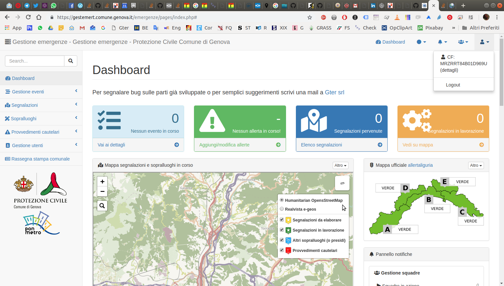

Introduzione¶
Da alcuni anni la Protezione Civile del Comune di Genova ha deciso di dotarsi di un proprio sistema informativo per la gestione delle emergenze. In questo contesto, l’informazione territoriale gioca un ruolo fondamentale.
Si tratta di un applicativo web che permette la condivisione delle informazioni fra i vari soggetti sia interni al Comune che esterni (volontari di protezione civile, aziende municipalizzate, VVF, Regione, etc) coinvolti a vario titolo nella gestione delle emergenze e quindi di supportare le operazioni di gestione e mitigazione del rischio. Tale sistema, inizialmente realizzato dal Comune di Genova con risorse interne quale replica di altri sistemi informativi in dotazione all’Ente è stato recentemente completamente rinnovato grazie a dei finanziamenti PON Metro 2014-2020.
Il nuovo sistema, realizzato da Gter srl, oltre ad aver subito un importante restyling grafico che, a detta degli operatori di protezione civile, ha permesso di incrementarne sostanzialmente l’usabilità, ha ora al centro l’aspetto territoriale.
Ogni segnalazione e/o intervento svolto è infatti georeferenziato grazie al collegamento con la toponomastica comunale. Questo nuovo approccio permette di avere in ogni istante un quadro preciso di quanto sta avvenendo sul territorio e pertanto di ottimizzare la gestione delle poche risorse a disposizione. Collegato alle banche dati territoriali, non solo alla toponomastica, ma anche all’anagrafe, e ai principali elementi a rischio (rii, sottopassi etc), il sistema permette di gestire e registrare interventi puntuali quali sgomberi o interdizioni all’accesso in maniera sicura ed efficiente.